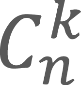

Aspecte teoretice Vor exista probleme în care va trebui să-l calculăm pe . În această situaţie nu ne putem baza pe formula deoarece calcularea factorialilor este greoaie şi ineficientă (avem nevoie de înmulţire pe numere mari). Pentru a rezolva eficient această problemă ne bazăm pe Triunghiul lui Pascal. Modul în care acesta se construieşte are la bază formula de recurenţă a combinărilor: TP(n,k)=TP(n-1,k)+TP(n-1,k-1). Astfel, TP(n,k) va fi egal cu .